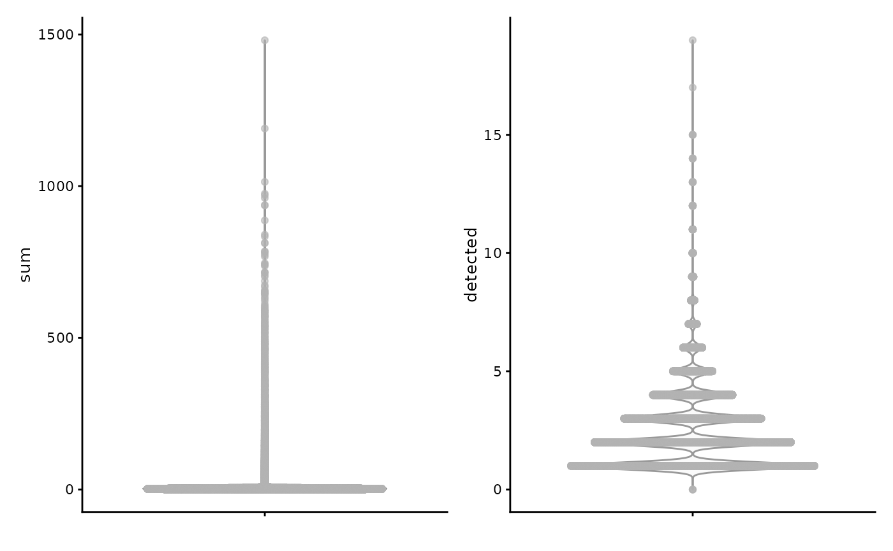
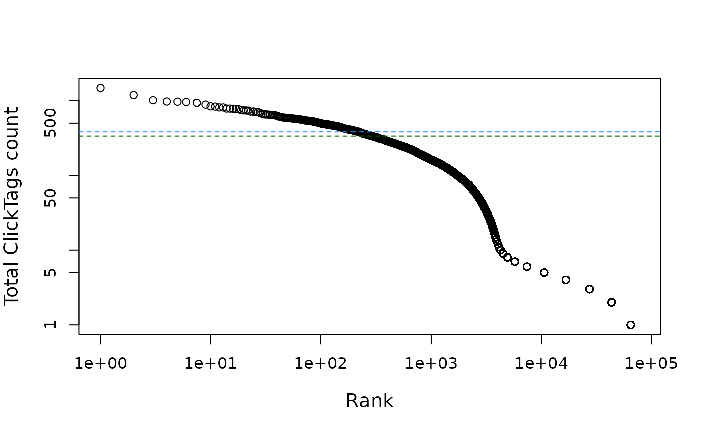

Quality control on Chromium CRISPR Guide Capture libraries
Kayla Jackson and A. Sina Booeshaghi
2024-11-22
Source:vignettes/vig12_crispr.Rmd
vig12_crispr.RmdIntroduction
The data in this vignette is shipped with the cellatlas
repository. The count matrix and metadata are provided in the
cellatlas/examples folder as an AnnData
object. We will begin by loading the object and converting it to a
SingleCellExperiment object.
library(stringr)
library(Matrix)
library(DropletUtils)
library(SpatialExperiment)
library(SpatialFeatureExperiment)
library(scater)
library(scuttle)
library(Voyager)
library(ggplot2)
theme_set(theme_bw())
if (!file.exists("10xcrispr.rds"))
download.file("https://github.com/pachterlab/voyager/raw/documentation-devel/vignettes/10xcrispr.rds", destfile = "10xcrispr.rds")
sce <- readRDS("10xcrispr.rds")
is_mito <- str_detect(rowData(sce)$gene_name, regex("^mt-", ignore_case=TRUE))
sum(is_mito)
#> [1] 0
sce <- addPerCellQCMetrics(sce, subsets = list(mito = is_mito))
names(colData(sce))
#> [1] "sum" "detected" "subsets_mito_sum"
#> [4] "subsets_mito_detected" "subsets_mito_percent" "total"
plotColData(sce, "sum") +
plotColData(sce, "detected")
plotColData(sce, x = "sum", y = "detected", bins = 100) +
scale_fill_distiller(palette = "Blues", direction = 1)
#> Scale for fill is already present.
#> Adding another scale for fill, which will replace the existing scale.
plotColData(sce, x = "sum", y = "subsets_mito_detected", bins = 100) +
scale_fill_distiller(palette = "Blues", direction = 1)
#> Scale for fill is already present.
#> Adding another scale for fill, which will replace the existing scale.
#> Warning: Computation failed in `stat_bin2d()`.
#> Caused by error in `bin2d_breaks()`:
#> ! `origin` must be a number, not `NaN`.
bcrank <- barcodeRanks(counts(sce))
knee <- metadata(bcrank)$knee
inflection <- metadata(bcrank)$inflection
plot(bcrank$rank, bcrank$total, log="xy",
xlab="Rank", ylab="Total ClickTags count", cex.lab=1.2)
#> Warning in xy.coords(x, y, xlabel, ylabel, log): 3 y values <= 0 omitted from
#> logarithmic plot
abline(h=inflection, col="darkgreen", lty=2)
abline(h=knee, col="dodgerblue", lty=2)
sce <- sce[, which(sce$total > inflection)]
sce <- sce[rowSums(counts(sce)) > 0,]
sce
#> class: SingleCellExperiment
#> dim: 89 293
#> metadata(0):
#> assays(1): counts
#> rownames(89): Non-Targeting-5 Non-Targeting-7 ... HDAC1-1 HDAC1-2
#> rowData names(2): feature_name subsets_mito
#> colnames(293): AAAGAACAGAAACGAA AAAGAACGTTTGTCGA ... TTTGATCCAGGAGAAA
#> TTTGATCGTGGTAGTG
#> colData names(6): sum detected ... subsets_mito_percent total
#> reducedDimNames(0):
#> mainExpName: NULL
#> altExpNames(0):
sessionInfo()
#> R version 4.4.2 (2024-10-31)
#> Platform: x86_64-pc-linux-gnu
#> Running under: Ubuntu 22.04.5 LTS
#>
#> Matrix products: default
#> BLAS: /usr/lib/x86_64-linux-gnu/openblas-pthread/libblas.so.3
#> LAPACK: /usr/lib/x86_64-linux-gnu/openblas-pthread/libopenblasp-r0.3.20.so; LAPACK version 3.10.0
#>
#> locale:
#> [1] LC_CTYPE=C.UTF-8 LC_NUMERIC=C LC_TIME=C.UTF-8
#> [4] LC_COLLATE=C.UTF-8 LC_MONETARY=C.UTF-8 LC_MESSAGES=C.UTF-8
#> [7] LC_PAPER=C.UTF-8 LC_NAME=C LC_ADDRESS=C
#> [10] LC_TELEPHONE=C LC_MEASUREMENT=C.UTF-8 LC_IDENTIFICATION=C
#>
#> time zone: UTC
#> tzcode source: system (glibc)
#>
#> attached base packages:
#> [1] stats4 stats graphics grDevices utils datasets methods
#> [8] base
#>
#> other attached packages:
#> [1] Voyager_1.8.1 scater_1.34.0
#> [3] ggplot2_3.5.1 scuttle_1.16.0
#> [5] SpatialFeatureExperiment_1.9.4 SpatialExperiment_1.16.0
#> [7] DropletUtils_1.26.0 SingleCellExperiment_1.28.1
#> [9] SummarizedExperiment_1.36.0 Biobase_2.66.0
#> [11] GenomicRanges_1.58.0 GenomeInfoDb_1.42.0
#> [13] IRanges_2.40.0 S4Vectors_0.44.0
#> [15] BiocGenerics_0.52.0 MatrixGenerics_1.18.0
#> [17] matrixStats_1.4.1 Matrix_1.7-1
#> [19] stringr_1.5.1
#>
#> loaded via a namespace (and not attached):
#> [1] RColorBrewer_1.1-3 jsonlite_1.8.9
#> [3] wk_0.9.4 magrittr_2.0.3
#> [5] ggbeeswarm_0.7.2 TH.data_1.1-2
#> [7] magick_2.8.5 farver_2.1.2
#> [9] rmarkdown_2.29 fs_1.6.5
#> [11] zlibbioc_1.52.0 ragg_1.3.3
#> [13] vctrs_0.6.5 spdep_1.3-6
#> [15] DelayedMatrixStats_1.28.0 RCurl_1.98-1.16
#> [17] terra_1.7-83 htmltools_0.5.8.1
#> [19] S4Arrays_1.6.0 BiocNeighbors_2.0.0
#> [21] Rhdf5lib_1.28.0 s2_1.1.7
#> [23] SparseArray_1.6.0 rhdf5_2.50.0
#> [25] LearnBayes_2.15.1 sass_0.4.9
#> [27] spData_2.3.3 KernSmooth_2.23-24
#> [29] bslib_0.8.0 htmlwidgets_1.6.4
#> [31] desc_1.4.3 sandwich_3.1-1
#> [33] zoo_1.8-12 cachem_1.1.0
#> [35] igraph_2.1.1 lifecycle_1.0.4
#> [37] pkgconfig_2.0.3 rsvd_1.0.5
#> [39] R6_2.5.1 fastmap_1.2.0
#> [41] GenomeInfoDbData_1.2.13 digest_0.6.37
#> [43] ggnewscale_0.5.0 colorspace_2.1-1
#> [45] patchwork_1.3.0 RSpectra_0.16-2
#> [47] irlba_2.3.5.1 dqrng_0.4.1
#> [49] textshaping_0.4.0 beachmat_2.22.0
#> [51] labeling_0.4.3 fansi_1.0.6
#> [53] spatialreg_1.3-5 httr_1.4.7
#> [55] abind_1.4-8 compiler_4.4.2
#> [57] proxy_0.4-27 withr_3.0.2
#> [59] tiff_0.1-12 BiocParallel_1.40.0
#> [61] viridis_0.6.5 DBI_1.2.3
#> [63] HDF5Array_1.34.0 R.utils_2.12.3
#> [65] MASS_7.3-61 DelayedArray_0.32.0
#> [67] bluster_1.16.0 rjson_0.2.23
#> [69] classInt_0.4-10 tools_4.4.2
#> [71] units_0.8-5 vipor_0.4.7
#> [73] beeswarm_0.4.0 R.oo_1.27.0
#> [75] glue_1.8.0 nlme_3.1-166
#> [77] EBImage_4.48.0 rhdf5filters_1.18.0
#> [79] grid_4.4.2 sf_1.0-19
#> [81] cluster_2.1.6 memuse_4.2-3
#> [83] generics_0.1.3 gtable_0.3.6
#> [85] R.methodsS3_1.8.2 class_7.3-22
#> [87] data.table_1.16.2 ScaledMatrix_1.14.0
#> [89] BiocSingular_1.22.0 sp_2.1-4
#> [91] utf8_1.2.4 XVector_0.46.0
#> [93] ggrepel_0.9.6 pillar_1.9.0
#> [95] limma_3.62.1 splines_4.4.2
#> [97] dplyr_1.1.4 lattice_0.22-6
#> [99] survival_3.7-0 deldir_2.0-4
#> [101] tidyselect_1.2.1 locfit_1.5-9.10
#> [103] sfheaders_0.4.4 knitr_1.49
#> [105] gridExtra_2.3 edgeR_4.4.0
#> [107] xfun_0.49 statmod_1.5.0
#> [109] stringi_1.8.4 UCSC.utils_1.2.0
#> [111] fftwtools_0.9-11 yaml_2.3.10
#> [113] boot_1.3-31 evaluate_1.0.1
#> [115] codetools_0.2-20 tibble_3.2.1
#> [117] cli_3.6.3 systemfonts_1.1.0
#> [119] munsell_0.5.1 jquerylib_0.1.4
#> [121] Rcpp_1.0.13-1 zeallot_0.1.0
#> [123] coda_0.19-4.1 png_0.1-8
#> [125] parallel_4.4.2 pkgdown_2.1.1
#> [127] jpeg_0.1-10 sparseMatrixStats_1.18.0
#> [129] bitops_1.0-9 viridisLite_0.4.2
#> [131] mvtnorm_1.3-2 scales_1.3.0
#> [133] e1071_1.7-16 crayon_1.5.3
#> [135] scico_1.5.0 rlang_1.1.4
#> [137] cowplot_1.1.3 multcomp_1.4-26